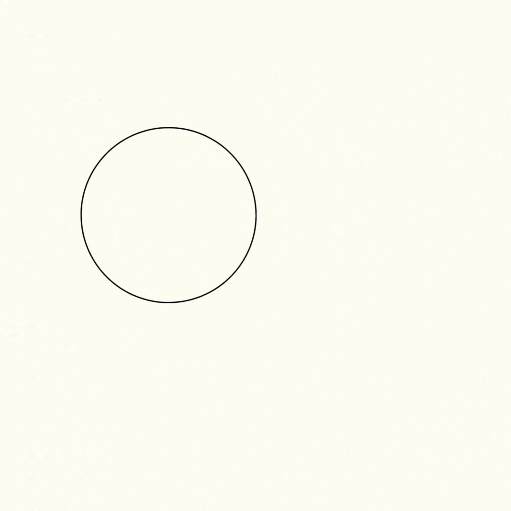

Receita de Brownie

Ingredientes

- 200g de chocolate meio amargo
- 150g de manteiga
- 1 xícara de açúcar
- 3 ovos
- 1 colher de chá de extrato de baunilha
- 1/2 xícara de farinha de trigo
- 1/4 de xícara de cacau em pó
- 1/4 de colher de chá de sal
- 1/2 xícara (chá) de nozes picadas ou castanhas de caju granuladas(opcional)
Modo de preparo
- Derreta chocolate meio amargo e manteiga juntos.
- Misture açúcar, ovos e baunilha até obter uma massa homogênea.
- Adicione farinha, cacau em pó e uma pitada de sal à mistura.
- Opcionalmente, incorpore nozes picadas ou castanhas de caju granuladas na massa.
- Despeje a massa em uma forma untada.
- Asse a 180°C por 25-30 minutos.
- Deixe o brownie esfriar antes de cortá-lo em quadrados.